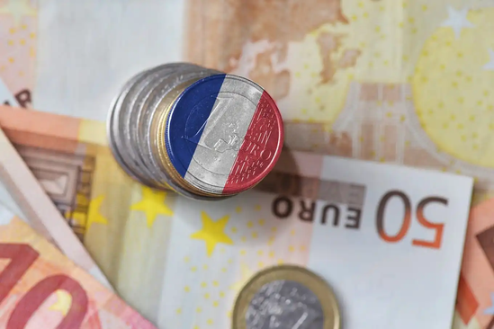
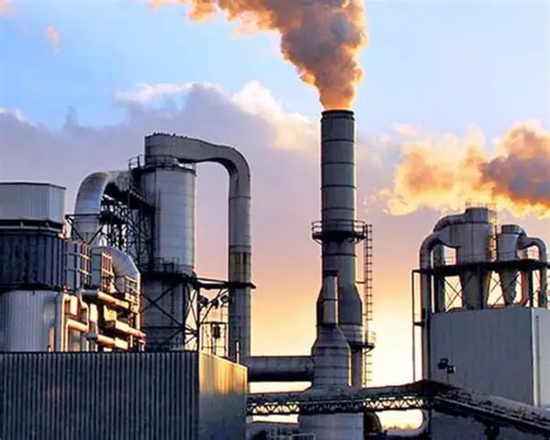

A economia da França é uma das mais desenvolvidas e diversificadas do mundo. Ela combina um setor industrial forte, uma agricultura moderna e um poderoso setor de serviços — especialmente turismo, moda, finanças e tecnologia. Abaixo está um resumo completo
Moeda

Moeda da França
A adoção do euro trouxe diversos impactos para a economia francesa.
A unificação monetária facilitou o comércio entre países europeus, reduziu custos de transação e aumentou a integração econômica. Para os cidadãos, tornou as viagens dentro da Europa mais simples, já que muitos destinos passaram a utilizar a mesma moeda.
O Banco Central Europeu (BCE) passou a ser responsável por definir a política monetária — como taxas de juros e controle da inflação — para todos os países da zona do euro, incluindo a França. Isso significou maior estabilidade econômica, mas também menos autonomia para decisões internas sobre a moeda.
indústrias

Aeronáutica e espacial:
A França abriga a Airbus, uma das maiores fabricantes de aviões do mundo.
Automobilística: Marcas como Renault, Peugeot e Citroën (Stellantis).
Energia: Fortemente baseada na energia nuclear, responsável por cerca de 70% da eletricidade do país.
Farmacêutica e cosméticos: Grupos como Sanofi e L’Oréal são líderes mundiais.
Defesa e tecnologia militar: Empresas como Dassault e Thales exportam aviões e sistemas de segurança.
Desafio Econômicos

Desemprego:
historicamente mais alto que a média europeia (geralmente entre 7% e 8%).
Dívida pública: elevada, próxima de 110% do PIB.
Transição energética: necessidade de reduzir a dependência da energia nuclear e do carbono.
Desigualdades regionais: o interior e o norte do país têm crescimento mais lento que Paris e o sul.
Além desses desafios, a economia francesa enfrenta pressão para modernizar sua indústria e aumentar competitividade.
A automação, a digitalização e a competição global exigem investimentos em inovação, pesquisa e desenvolvimento, especialmente nos setores de tecnologia, transporte e energia.